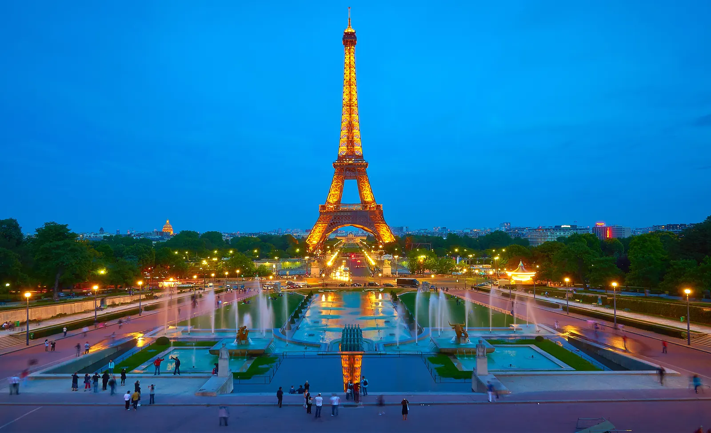
Thu 10 – Sat 12 Dec
Paris
Two winter days in the city of light: Christmas windows, the tower at dusk and the river after dark.
- 🗼 Eiffel Tower summit
- ✨ Champs-Élysées lights
- ⛪ Notre-Dame
- 🛥️ Seine by night
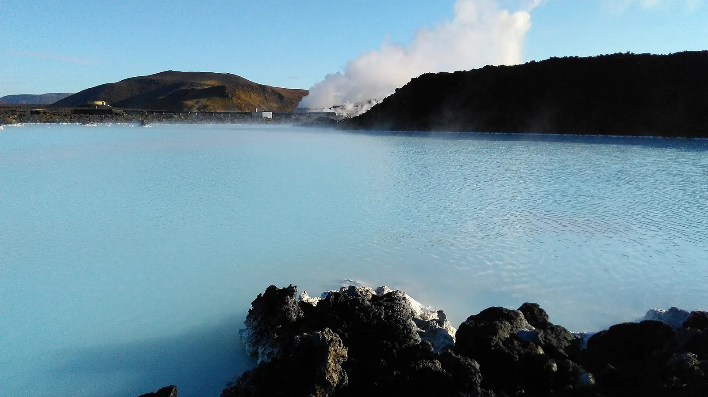
Sat 12 – Mon 14 Dec
Reykjavík
Straight from the plane into warm blue water, then a day deep inside a glacier.
- ♨️ Blue Lagoon
- 🧊 Into the Glacier
- 🏙️ Reykjavík
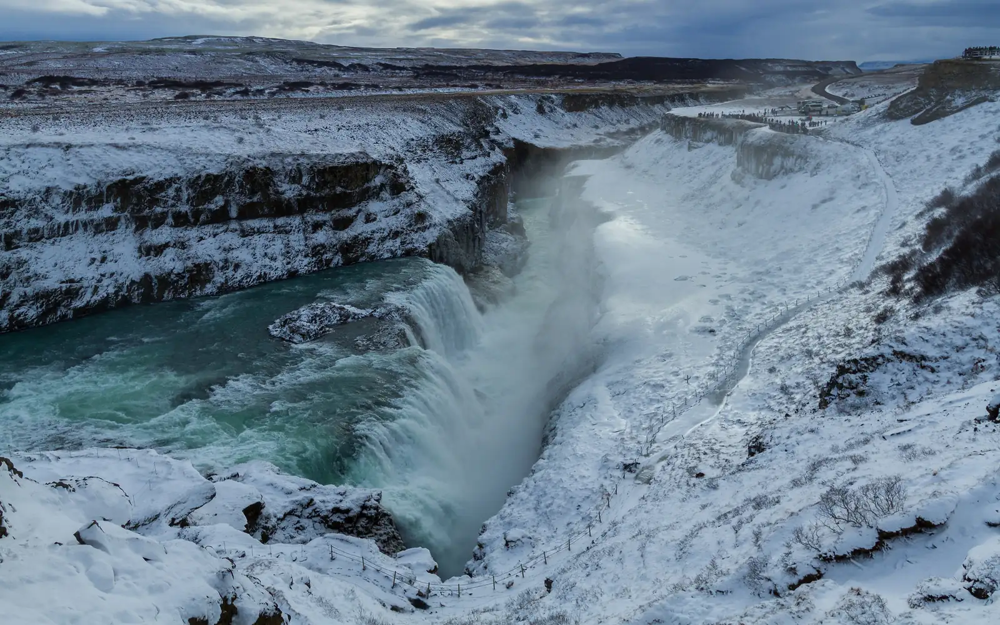
Mon 14 Dec
Golden Circle
The classic loop in short winter light: the rift valley, the geyser and the golden falls.
- 🌍 Þingvellir
- 💨 Strokkur geyser
- 🌊 Gullfoss
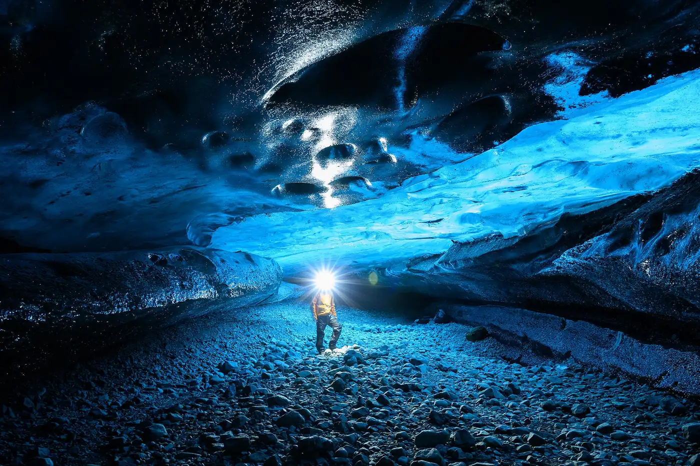
Tue 15 – Thu 17 Dec
South coast and Vík
Waterfalls you can walk behind, a blue ice cave under Katla, black sand, and real lava poured indoors.
- 💧 Seljalandsfoss · Skógafoss
- 🧊 Katla ice cave · Wed 16
- 🌋 Lava Show Vík · Wed 16
- 🖤 Reynisfjara
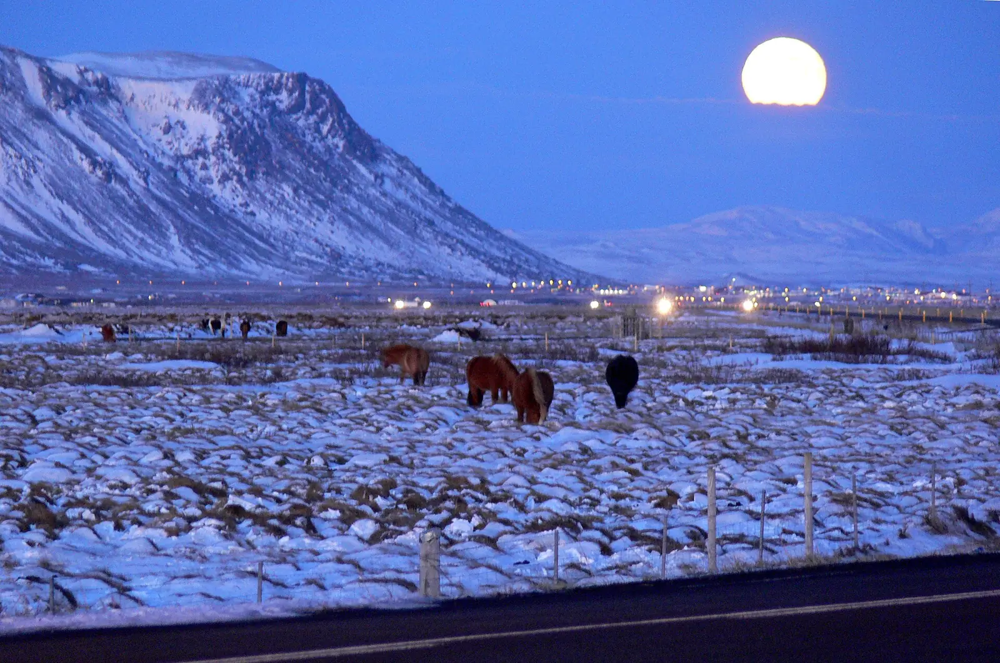
Thu 17 Dec
Selfoss
A slow day for weather, with a soak in the old Secret Lagoon.
- ♨️ Secret Lagoon
- 🐴 Icelandic horses
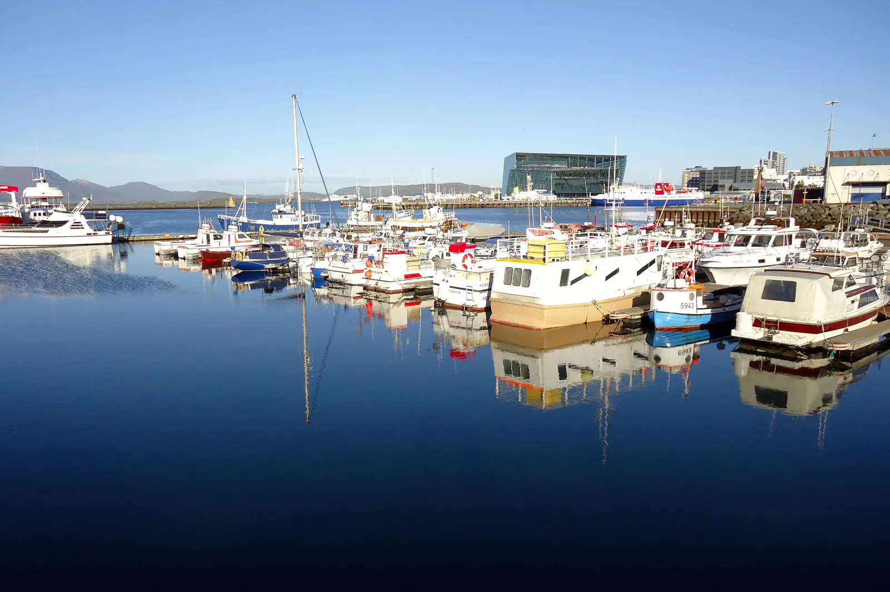
Fri 18 Dec
Reykjavík
A slow last day in Iceland: Christmas lights by the old harbour and the Yule Lads in town.
- 🎅 Yule Lads
- ✨ Christmas lights
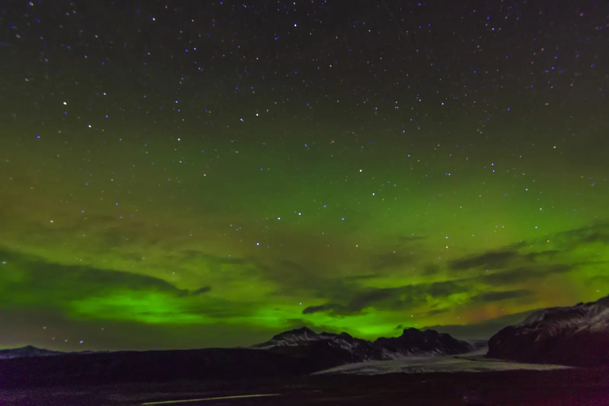
Iceland and Lapland
Northern lights
If the sky clears, we look up. No promises, just hope and warm hats.
- 🌌 Aurora nights
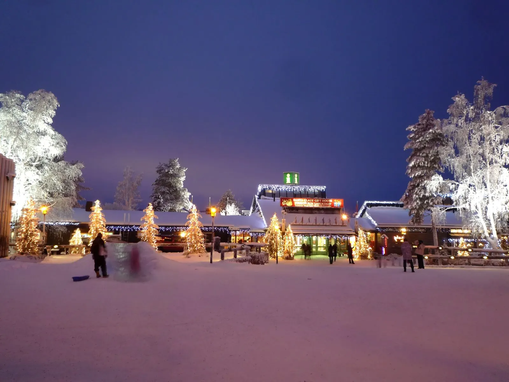
Sat 19 – Tue 22 Dec
Rovaniemi
Three snowy days on the Arctic Circle: Santa’s village, huskies and a reindeer sleigh.
- 🎅 Santa Claus Village
- 🐕 Bearhill huskies
- 🦌 Reindeer sleigh
- 🌌 Aurora
- 🔮 Glass igloo (option)
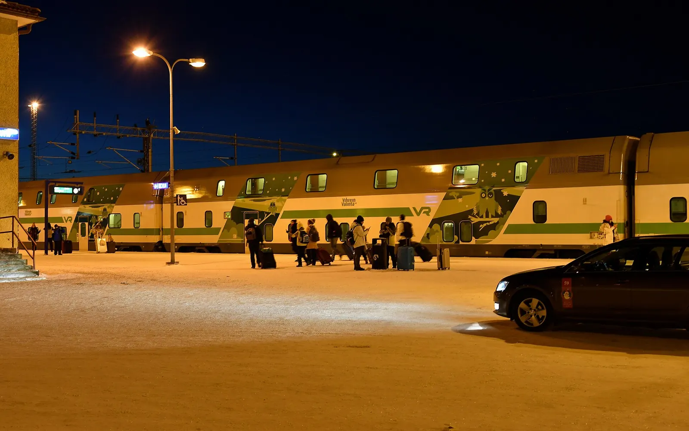
Tue 22 Dec
Santa Claus Express
Our own cabin on the night train, falling asleep in Lapland and waking in Helsinki.
- 🚂 Sleeper cabin
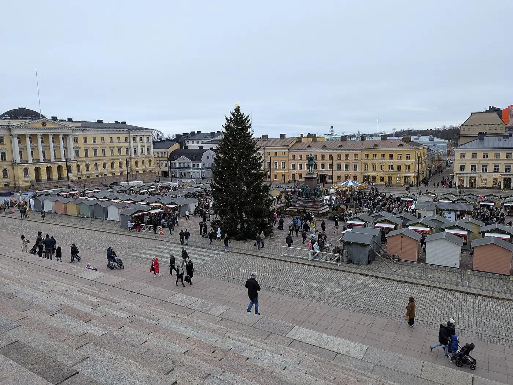
Wed 23 Dec
Helsinki and the ship
A day by the harbour, then a Viking Line ship overnight across the Baltic.
- 🏰 Suomenlinna
- ♨️ Allas Sea Pool
- 🛳️ Viking Line overnight
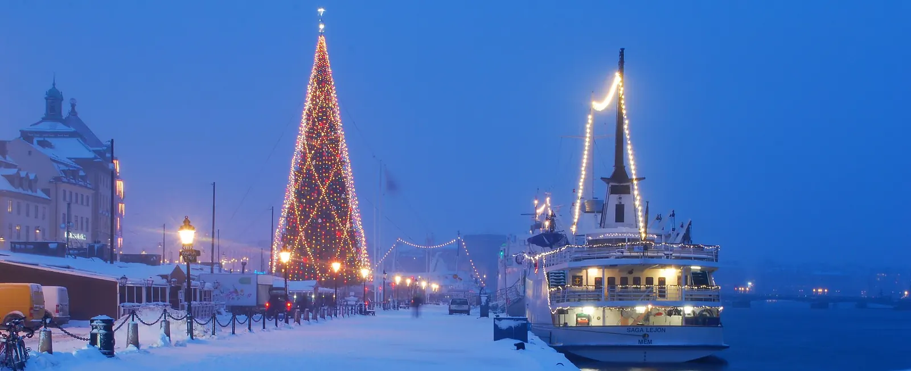
Thu 24 – Wed 30 Dec
Stockholm for Christmas
A Swedish Christmas: lights in the old town, the open-air museum, a 400-year-old ship and Pippi’s world.
- 🎄 Gamla stan
- 🦉 Skansen · Sat 26
- ⚓ Vasa · Sun 27
- 📚 Junibacken · Mon 28
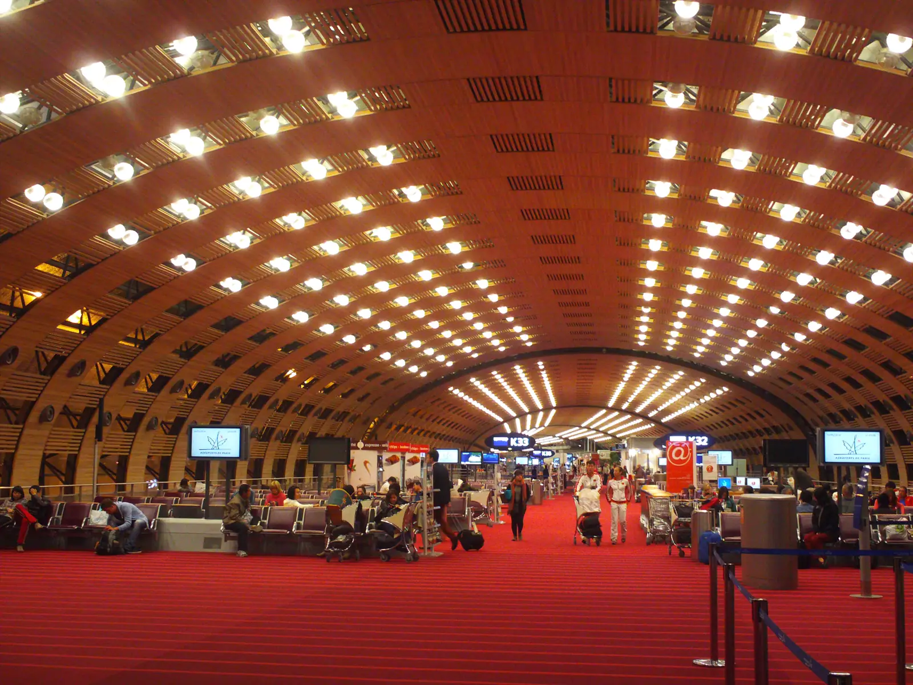
Wed 30 – Thu 31 Dec
Home
A last night by Paris CDG, then the long flight home.
- ✈️ Home for New Year